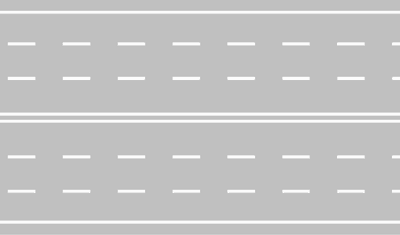

مناورة التجاوز والتخطي وقواعد الأمان
الدليل الاستراتيجي الشامل لمناورة التجاوز في القانون الإيطالي: فحص المراحل الثلاث للتجاوز الآمن، الحالات الحصرية للتجاوز من اليمين، الاستثناءات الجوهرية للتجاوز في المنعطفات والتلال، وفك شفرة فخ حظر التجاوز للشاحنات مقابل الحافلات والكامبر.
الواجبات القانونية الفورية:
- التأكد عبر المرايا الثلاث من أن السائق في الخلف لم يبدأ بمناورة تجاوزك.
- التأكد من أن مسافة الرؤية كافية تماماً ولا توجد مركبات قادمة في الاتجاه المعاكس.
- تشغيل مؤشر الاتجاه لليسار (*Freccia sinistra*) لتنبيه من حولك قبل التحرك.
مصفوفة المقارنة البصرية الحاسمة لمناورات التجاوز
الفروق الدقيقة التي يركز عليها واضع الامتحان الوزاري بين المسموح والمحظور
التجاوز من اليسار
القاعدة العامة لجميع المركبات؛ يتطلب التحقق المسبق وترك مسافة جانبية كافية والعودة تدريجياً لليمين.
التجاوز من اليمين
استثناء حصري: فقط عند انعطاف المركبة الأمامية يساراً، أو لتجاوز الترام عند وجود رصيف أمان (*Salvagente*).
طريق ذو اتجاهين بنهر واحد
🚫 حظر التجاوز في المنعطفات والتلال: لانعدام الرؤية واحتمال وجود مركبات مقابلة في الاتجاه المعاكس.
طريق بنهري طريق منفصلين
✅ التجاوز مسموح في المنعطفات والتلال: لعدم وجود خطر اصطدام مقابل؛ كل اتجاه له مساره المستقل.

ممنوع التجاوز لجميع المركبات ذات المحرك
- يحظر على جميع المركبات ذات المحرك تجاوز مركبات أخرى ذات محرك (أكثر من عجلتين).
- الاستثناء المسموح: يسمح بتجاوز المركبات غير المزودة بمحرك (دراجات وعربات يد) أو الدراجات النارية ذات العجلتين (*Motocicli/Ciclomotori*) بشرط عدم غزو المسار المقابل والبقاء داخل نفس الحارة.

ممنوع التجاوز لشاحنات نقل البضائع > 3.5 طن
- يمنع التجاوز حصراً على مركبات نقل البضائع (*Autocarri*) ذات الوزن الإجمالي المرخص به أكثر من 3.5 طن.
- لا ينطبق إطلاقاً على الحافلات (*Autobus*) أو الكامبر (*Autocaravan*) حتى لو تجاوز وزنها 3.5 طن لأنها مخصصة لنقل الأشخاص!

نهاية منع التجاوز لجميع المركبات
- تعلن عن نهاية منطقة حظر التجاوز المفروضة سابقاً بالإشارة 57.
- يعود التجاوز مسموحاً وفق القواعد العامة وظروف الطريق والخطوط الأرضية.

نهاية منع التجاوز للشاحنات الثقيلة
- تعلن نهاية الحظر الخاص بشاحنات نقل البضائع ذات الوزن $> 3.5 ext{ t}$.
- يسمح للشاحنات الثقيلة بالتجاوز من هذه النقطة وفق قواعد الطريق العامة.

نهر طريق باتجاهين و4 حارات (تجاوز في المنعطف)
- التجاوز في المنعطفات والتلال مسموح تماماً: لأن كل اتجاه له حارتان مخصصتان والتجاوز لا يتطلب اجتياز الخط المتصل المزدوج في المنتصف.
- الحارة اليمنى للسير العادي واليسرى للتجاوز.

طريق بنهري طريق منفصلين بحاجز منتصف
- كل نهر طريق باتجاه واحد ومفصول بحاجز مادي ثابت (*Spartitraffico*).
- يسمح بالتجاوز في أي موضع بما في ذلك المنحنيات لعدم وجود أي حركة سير مقابلة.
مناورة تخطي مركبة أبطأ تسير أمامك في نفس الاتجاه.
المسافة الفاصلة بين السيارتين أثناء مناورة التجاوز لتفادي التلامس.
رصيف حماية المشاة وركاب الترام؛ يتيح تجاوز الترام من اليمين عند توقفه.
مركبة مخصصة لنقل الأشياء؛ تمنع من التجاوز بإشارة 58 إذا زاد وزنها عن 3.5 طن.